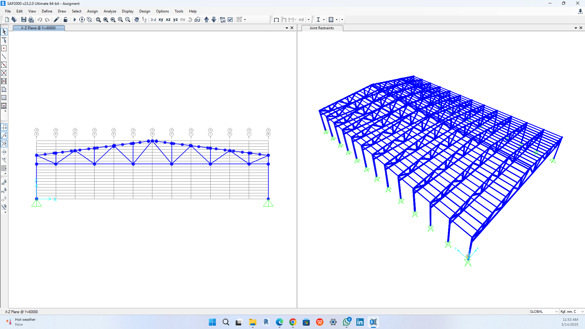

ETABS, SAP2000, structural modelling, frame analysis, truss analysis, and structural design related projects.

Structural modelling and analysis of building frame systems using ETABS for gravity and lateral load assessment.
Software: ETABS
Truss and bridge-type structural analysis using SAP2000, including member force evaluation and structural behaviour study.
Software: SAP2000
Structural design and analysis work involving beams, columns, frames, trusses, and engineering design documentation.
Software: ETABS, SAP2000, AutoCAD